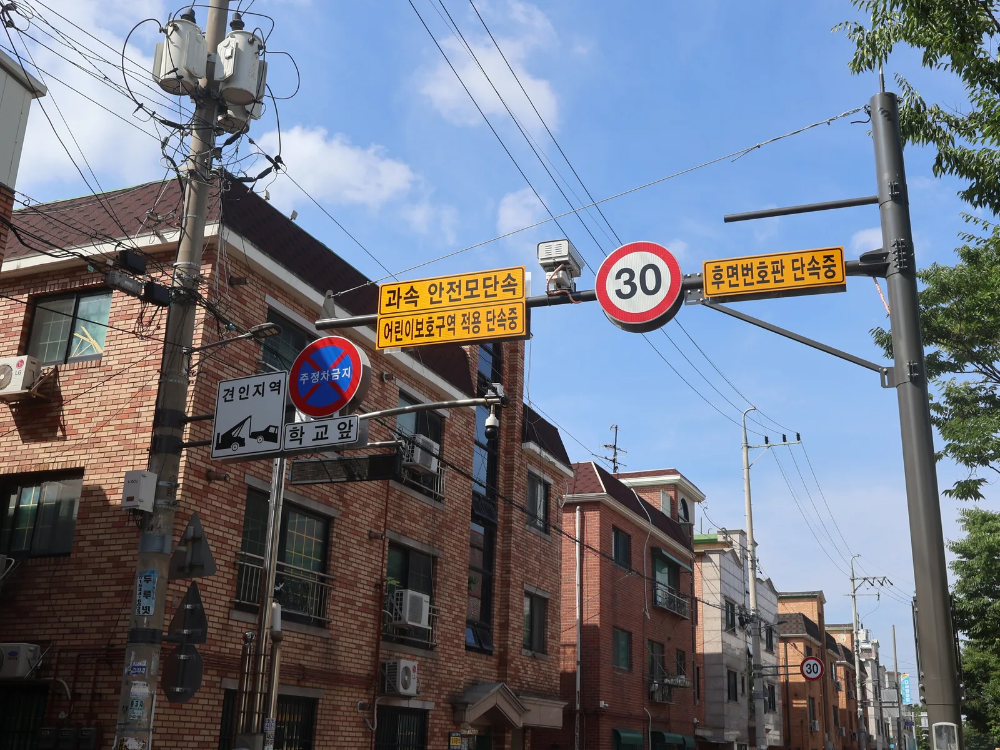
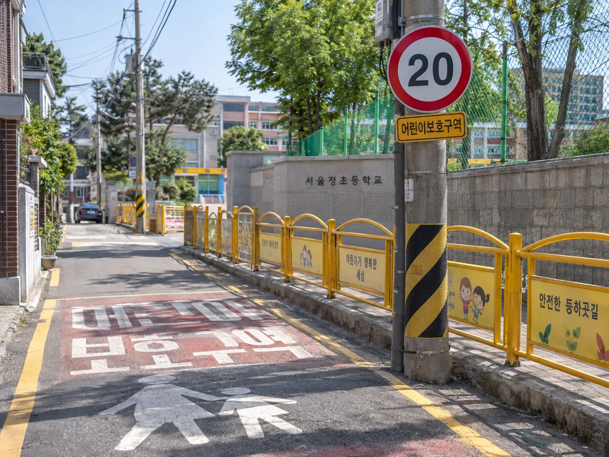
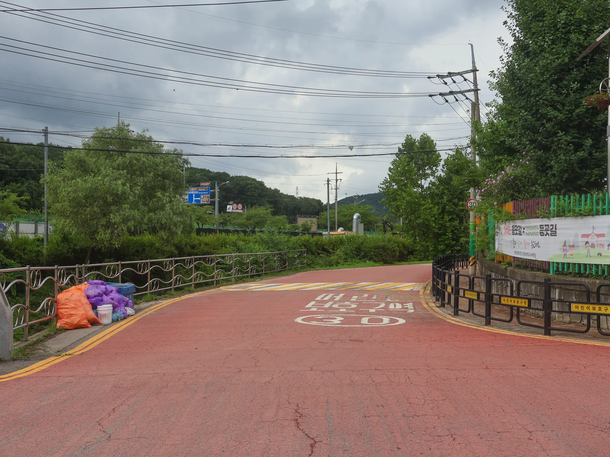

▲ ▲ 서울의 한 어린이보호구역 전신주에 설치된 안내판들. '어린이보호구역 적용 단속중'과 함께 '후면번호판 단속중' 문구가 따로 붙어 있다 ⓒ LandAndTree, Wikimedia Commons (CC0 1.0)
"내년부터 스쿨존이 전부 시속 20km로 바뀐다더라" — 온라인 커뮤니티와 SNS에 이런 글이 퍼진 지 꽤 됐다. 실제로 스쿨존 안에서 시속 20km 표지판을 본 사람이 늘면서 소문에 더 힘이 실렸다. 그런데 결론부터 말하면 이건 절반만 맞는 이야기다. 경찰청은 2026년에도 "모든 어린이보호구역의 제한속도를 시속 20km로 일괄 변경하거나 도로교통법을 개정할 계획이 없다"고 공식적으로 선을 그었다. 반면 실제로 달라지는 것도 분명히 있다. 카프리즘이 소문과 사실을 나눠 정리했다.
1. "전국 스쿨존이 다 20km 된다"는 소문, 사실입니까
결론부터 말하면 사실이 아니다. 서울경제가 '내년부터 달라지는 교통법규'라는 제목으로 온라인에 확산된 게시글을 검증한 결과, 스쿨존 제한속도를 시속 20km로 일괄 하향한다는 내용은 경찰청이 직접 허위·과장으로 확인했다. 도로교통법상 어린이보호구역의 제한속도는 여전히 시속 30km 이내가 원칙이며, 이를 시속 20km로 명시적으로 바꾸거나 관련 법을 개정할 계획도 없다는 것이 경찰청의 공식 답변이다. 같은 게시글에 함께 돌던 전동킥보드 운전 연령 18세 상향, 음주운전 기준 0.02%로 강화, 불법주차 단속용 휴대전화 수집 법 개정, 2026년 11월 신규 번호판 도입 같은 내용도 모두 허위로 확인됐다. 경찰청은 정확한 정보로 불필요한 불안을 줄이겠다고 밝혔다.
2. 그런데 일부는 진짜 20km로 바뀐다 — 이면도로 한정 하향

▲ 도로 폭이 좁아 보행 공간 확보가 어려운 이면도로는 지자체가 개별적으로 제한속도를 시속 20km로 낮추고 있다(개념을 보여주기 위해 생성한 예시 이미지) ⓒ AI 생성 이미지
"일괄 하향은 아니다"는 말이 "아무것도 안 바뀐다"는 뜻은 아니다. 현행 도로교통법은 필요할 경우 지자체가 개별 구간의 제한속도를 시속 20km로 낮추는 것을 허용하고 있고, 실제로 이 조항을 쓰는 지자체가 늘고 있다. 서울시가 대표적이다. 서울시 도시교통실은 학교가 주택가 안쪽에 있어 보행 공간을 넉넉히 확보하기 어려운 곳을 중심으로, 도로 폭 8m 미만 이면도로 50곳을 추가로 지정해 제한속도를 기존 시속 30km에서 20km로 낮추는 사업을 경찰·교육청·자치구와 함께 추진해왔다. 과속방지턱과 미끄럼방지 포장 설치, 필요한 곳은 보행자우선도로 지정까지 병행하는 방식이다. 서울시 전체 어린이보호구역 개선에는 연간 약 382억 원이 투입된다. 즉 '내가 다니는 스쿨존이 30km인지 20km인지'는 전국 공통 답이 아니라 구간마다 확인해야 하는 문제가 됐다.
보안뉴스에서 서울시 스쿨존 개선 사업 확인3. 표지판보다 카메라가 달라졌다 — 무인단속 확대

▲ 실시간 속도표시 전광판. 어린이보호구역의 무인단속 카메라는 이런 설비와 함께 설치돼 과속·신호위반은 물론 일시정지 위반까지 기계가 자동으로 잡아낸다 ⓒ Wikimedia Commons
속도 기준보다 체감이 큰 변화는 단속 방식이다. 2026년 들어 스쿨존 무인단속카메라의 적발 범위가 넓어졌다는 보도가 이어지고 있다. 과거에는 과속·신호위반 위주였다면, 이제는 정지선 앞 일시정지 위반처럼 사람이 눈으로 잡아내기 어려웠던 위반까지 카메라가 자동으로 인식해 적발하는 지역이 늘고 있다. 어린이보호구역 내 무인 교통 감시 장치 설치 자체는 2020년 시행된 이른바 '민식이법'으로 의무화됐지만, 6년이 지난 지금은 장비의 판독 정확도와 적발 항목이 훨씬 촘촘해졌다는 것이 핵심 차이다. 단순히 카메라 대수를 늘리는 것을 넘어, 같은 카메라가 더 많은 위반 유형을 걸러내는 쪽으로 무게중심이 옮겨간 셈이다.
4. 오토바이도 못 피한다 — 후면번호판 단속카메라

▲ 어린이보호구역 노면표시. 이륜차는 번호판이 차량 뒤쪽에만 달려 있어 기존의 전면 촬영 방식 단속카메라로는 잡아내기 어려웠다 ⓒ LandAndTree, Wikimedia Commons (CC0 1.0)
승용차 운전자만 대상이 아니다. 오토바이는 번호판이 차체 뒤쪽에만 부착돼 있어서, 전면을 찍는 기존 방식의 무인단속카메라로는 과속이나 신호위반을 저질러도 번호판을 특정하기 어려웠다. 이 사각지대를 메우기 위해 후면 촬영 카메라가 스쿨존을 중심으로 확대 설치되는 추세다. 실제로 취재 중 확인한 서울 시내 어린이보호구역 표지판에도 '후면번호판 단속중'이라는 문구가 별도로 붙어 있었다. 안전모(헬멧) 미착용이나 보도 주행처럼 이륜차 특유의 위반 행위에 대한 현장 단속도 스쿨존·학원가를 중심으로 병행되고 있다. 그동안 상대적으로 단속 사각지대에 있던 이륜차 운전자라면, 더는 '뒤에서는 안 걸린다'는 생각을 접어야 할 때다.
5. 오전 8시~오후 8시, 어디까지 적용되나
어린이보호구역의 가중처벌은 오전 8시부터 오후 8시까지 적용된다는 원칙 자체는 그대로다. 평일·주말·공휴일 구분 없이 동일하게 적용되며, 방학 기간에도 단속을 유지하는 지역이 늘고 있고 일부 구간은 시간 제한 없이 24시간 상시 단속으로 바뀌었다. 실제 처벌 수위도 가볍지 않다. 한국도로교통공단 자료를 보면 어린이보호구역 속도위반(승용차 기준)은 시속 20km 이하 초과 시 범칙금 8만 원·벌점 15점, 20~40km 초과는 9만 원·30점, 40~60km 초과는 12만 원·60점, 60km 초과는 15만 원·120점으로 일반 도로보다 훨씬 무겁다. 신호위반은 무인단속 기준 승용차 13만 원·승합차 14만 원, 벌점은 승용·승합 모두 30점이 부과된다. 경찰청과 행정안전부는 매년 초 스쿨존과 학원가를 중심으로 민·관 합동 특별단속 기간을 운영해왔고, 올해도 같은 흐름이 이어지고 있다. 등하교 시간대 통학로 주변 불시 음주단속, 오토바이 보도 주행 집중 단속이 함께 진행되는 것도 특징이다.
한국도로교통공단에서 과태료 기준 확인6. 정리
체크포인트
- 전국 스쿨존 일괄 시속 20km 하향은 가짜뉴스다. 원칙은 여전히 시속 30km다.
- 다만 도로 폭이 좁은 일부 이면도로는 지자체가 개별적으로 20km로 낮추고 있어, 구간별 표지판 확인이 필요하다.
- 무인단속카메라는 과속·신호위반뿐 아니라 일시정지 위반까지 자동으로 적발하는 방향으로 확대되고 있다.
- 후면번호판 단속카메라가 늘면서 그동안 사각지대였던 이륜차 단속도 강화됐다.
- 가중처벌 시간대는 오전 8시~오후 8시로 그대로지만, 일부 구간은 24시간 상시 단속으로 바뀌었다.
- 속도위반 범칙금은 8만~15만 원(벌점 15~120점), 신호위반은 최대 13만 원(벌점 30점)까지 부과된다.